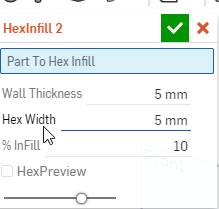
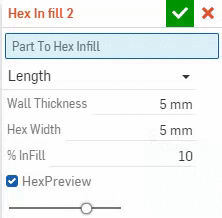

由原本的

更改為下拉式可選所需類型

原始碼:
FeatureScript 975;
import(path : "onshape/std/geometry.fs", version : "975.0");
annotation { "Feature Type Name" : "Hex In fill" }
export const HexInfill2 = defineFeature(function(context is Context, id is Id, definition is map)
precondition
{
annotation { "Name" : "Part To Hex Infill", "Filter" : EntityType.BODY, "MaxNumberOfPicks" : 1 } //表單名稱:Part To Hex Infill,可選項目:實體,最大選擇數:1
definition.PartToInfill is Query; //把所選項目定義為PartToInfill之後要用到只要輸入definition.PartToInfill就代表所選的實體
annotation { "Name" : "Input type" }
definition.HexInputType is HexInputType;
//長度表單開始處
if (definition.HexInputType == HexInputType.length)
{
annotation { "Name" : "Wall Thickness" } //表單名稱:Wall Thickness
isLength(definition.WallThickness, HEX_BOUNDS);
}
if (definition.HexInputType == HexInputType.length)
{
annotation { "Name" : "Hex Width" } //表單名稱:Hex Width
isLength(definition.HexWidth, HEX_BOUNDS);
}
if (definition.HexInputType == HexInputType.length)
{
annotation { "Name" : "% InFill" } //表單名稱:% InFill
isInteger(definition.InFill, INFILL_BOUNDS);
}
//長度表單結束
//外力表單開始處
if (definition.HexInputType == HexInputType.force)
{
annotation { "Name" : "Force (N)" } //表單名稱:Force (N)
isReal(definition.Force, POSITIVE_REAL_BOUNDS);
}
if (definition.HexInputType == HexInputType.force)
{
annotation { "Name" : "Compressive Strength (Mpa)" } //表單名稱:Compressive Strength (Mpa)
isInteger(definition.Compressive, POSITIVE_COUNT_BOUNDS); //所填數值必需>0
}
if (definition.HexInputType == HexInputType.force)
{
annotation { "Name" : "Safety Factor" } //表單名稱:Compressive Strength (Mpa)
isInteger(definition.SafetyFactor, POSITIVE_COUNT_BOUNDS); //所填數值必需>0
}
//外力表單結束
annotation { "Name" : "HexPreview", "Default" : true }//表單名稱:HexPreview 預設:是
definition.HexPreview is boolean; //設定輸出為布林值(輸出1或0判斷是或否)
}
{
});
export enum HexInputType
{
annotation { "Name" : "Length" }
length,
annotation { "Name" : "Force" }
force
}
export const INFILL_BOUNDS = ///設定值域
{
(unitless) : [1, 10, 100]
} as IntegerBoundSpec; //限定整數
export const HEX_BOUNDS =
{
(millimeter) : [1, 5, 100],
} as LengthBoundSpec; //限定整數